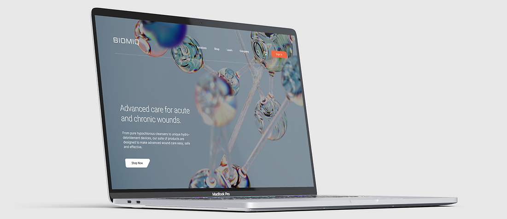
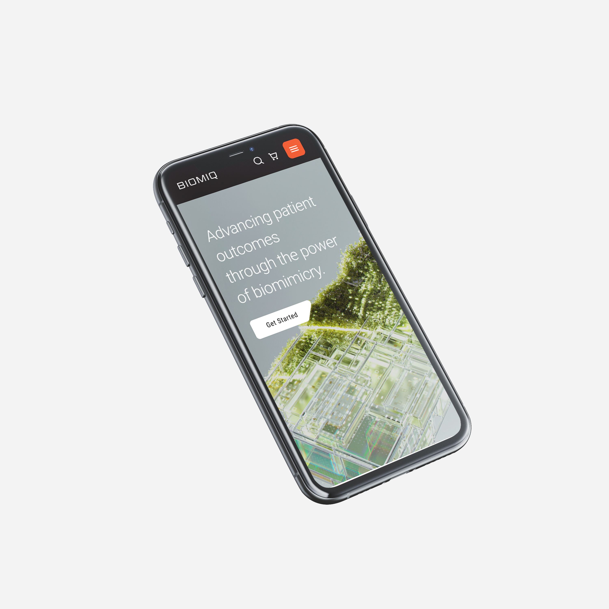
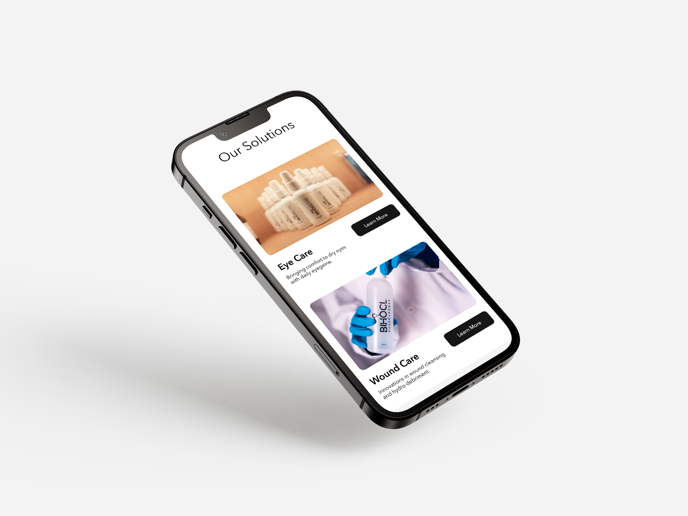
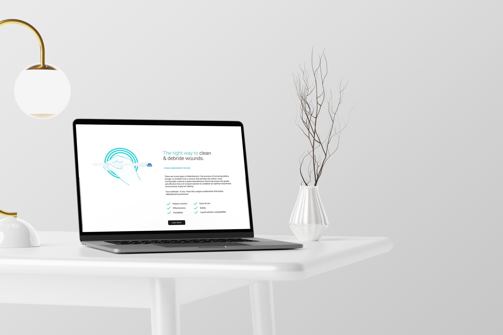
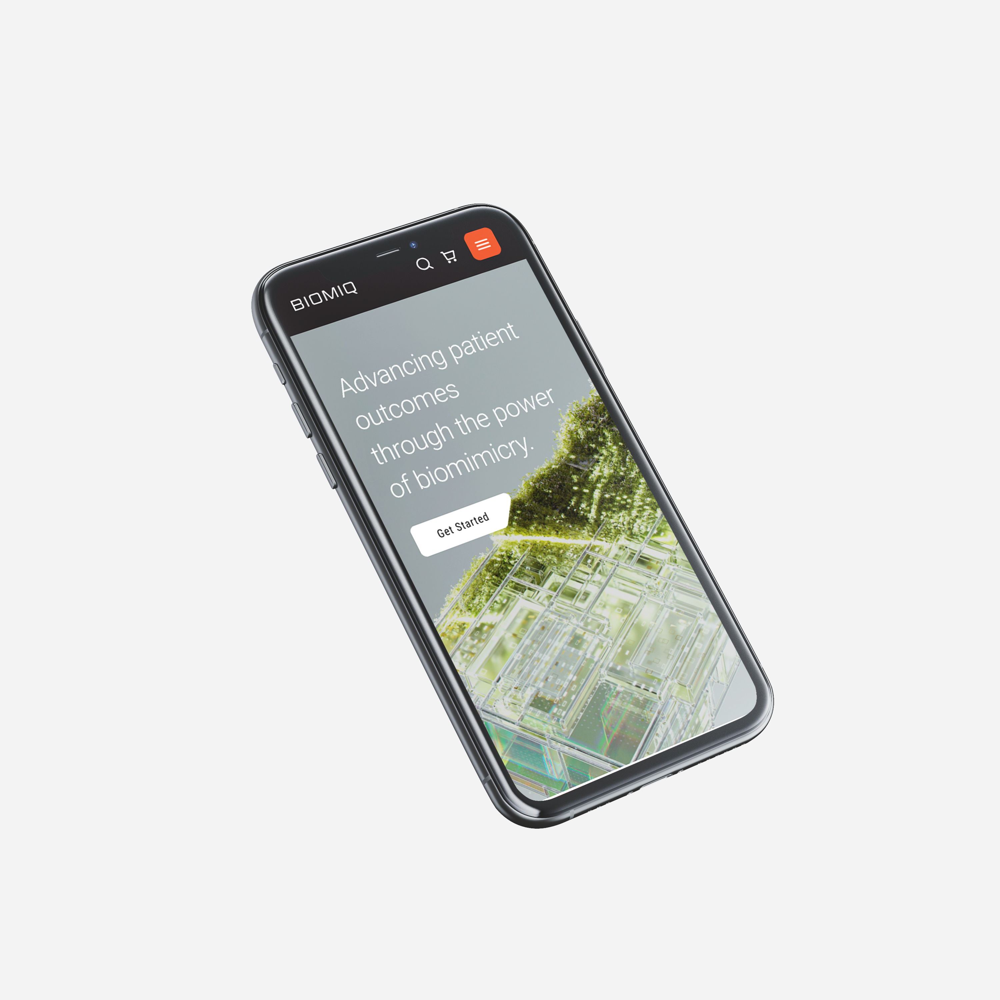
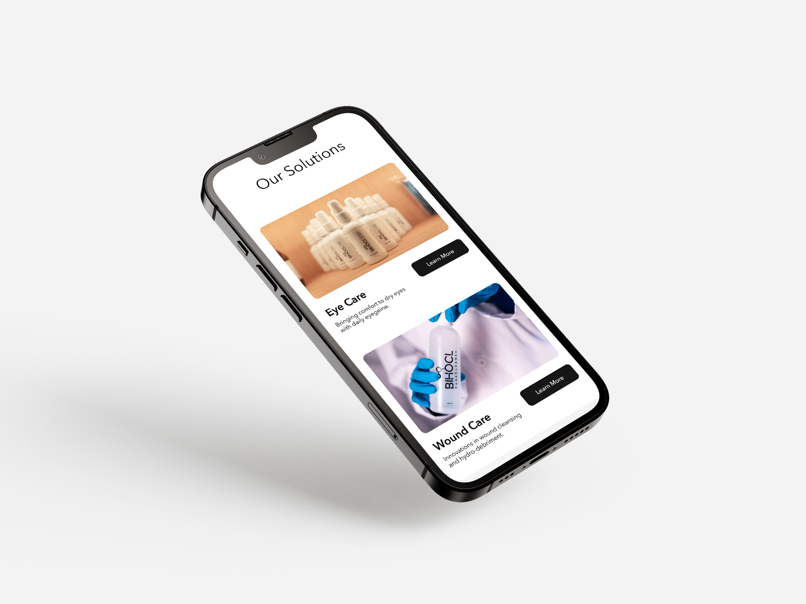
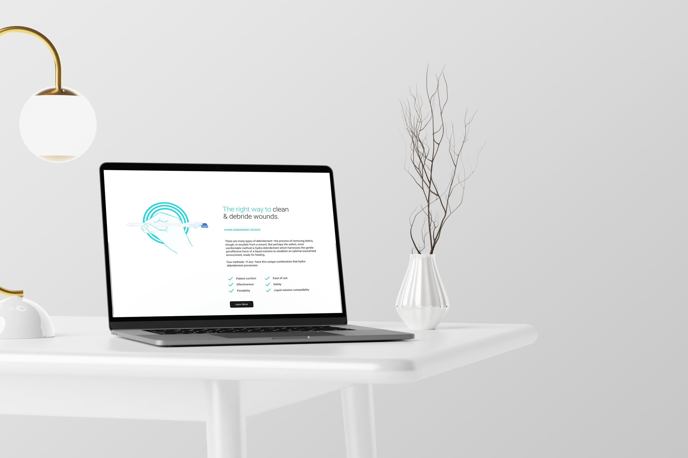

Biomiq
The Biomiq project is a comprehensive redesign and rebrand of Sterasure that effectively addresses usability issues and aligns the website with contemporary design and UX trends, ultimately showcasing Biomiq (previously Sterasure) as an innovative industry leader.
Overview
A comprehensive rebrand not only with a new new name but increased functionality keeping user needs at the center of the rebrand and restructure.
Leading a six-month project, I worked with cross-functional teams to simplify the site and improve navigation. Our user-centric approach prioritized ease of access to information, resulting in a modern, visually appealing redesign.
Through collaboration with UX designers, developers, content creators, and marketers, and with user testing to refine the design, we successfully aligned the site with UX standards, positioning Biomiq (previously Sterasure) as an innovative industry leader.
Role
-
Lead Product Designer: Led scrums, collaborated with cross-functional teams, facilitated workshops, mentored, and served as a lead for rebrand
-
Full-Stack Product Design: Designed visuals, user experiences, prototypes, and motion; crafted all design elements unless sourced from the Design System. As well as conducted all research involved
-
Cross-functional collaboration: Partnered with teams (Front end Developers, Back end developers, Business and Stakeholders)
Process
1. Identifying Core Issues
Identifying core issues with the platform was step one
2. Research & Insights
Research is at the center of great design and we used a variety of experiments
3. Strategy & Collaboration
Creating a strategy that works for our user were key
4. Design & Redesign Execution
Great design is seamless, easy and simple
5. User Testing & Final Adjustments
User testing is always the center of UX projects
6. Handoff & Final Prototypes
Developers need documentation and staged rollout, this is a crucial step
7. Outcomes & Post Launch Testing
Increased user retention and sales is what we are looking for.

Impact
Growth Metrics Post-Redesign:
-
Website Traffic: +25-35% increase overall, with +20-30% in organic search traffic.
-
User Engagement: +15-30% longer session duration, +20-30% fewer bounces, +20-30% more pages per session.
-
Conversions: +10-20% more B2B inquiries, +15-25% more B2C conversions, +15-20% more form submissions.
-
Customer Satisfaction: +15-25% higher CSAT, +10-20% better NPS.
-
Mobile Performance: +15-25% more mobile traffic, +10-20% higher mobile conversion rates.
-
Product Engagement: +20-30% more product page views, +15-20% more product inquiries.
-
Retention: +10-15% more repeat visits, +10-15% better retention.
-
Revenue & Leads: +15-20% revenue growth, +10-20% more leads.
Key improvements were driven by enhanced user-centric design, mobile optimization, and SEO
Problem Statement
The Biomiq (previously Sterasure) website has a mismatch between its content, which is focused on businesses, and its main features, which are designed for consumers.
The company also had a second website dedicated to only businesses, with some products appearing on both sites
Research
Research Overview: This research focuses on the challenges of merging two websites to address different business models and user expectations. The goal is to identify best practices for creating a unified digital platform that harmonizes B2B and B2C dynamics for Biomiq (previously Sterasure)
Site Map Analysis: The initial Biomiq (previously Sterasure) website had a complex and confusing structure. The sitemap revealed a disorganized hierarchy, hindering users from easily finding products and services. A redesign is needed to create a more user-friendly, intuitive interface for better navigation.
Customer Journey & Competitor Insights: Competitor analysis highlighted diverse approaches, such as separate business categories for Microsoft, Coca-Cola, and Apple. These strategies offer clear pathways tailored to different user needs, offering lessons for Biomiq (previously Sterasure) redesign.
Initial User Testing: User testing (20 participants, aged 18-40) revealed several UX issues in navigating the site. Including poor information architecture, misaligned mental models, and weak product association. Improvements suggested include clearer navigation, better brand association, enhanced CTAs, and a more intuitive layout. Feedback stressed the importance of iterative design to address user confusion and optimize the user journey.
Key UX Considerations:
-
Improve navigation and information architecture.
-
Align content with user expectations.
-
Strengthen product and brand associations.
-
Design effective CTAs and ensure consistent UI elements.
-
Accommodate accessibility needs, such as font sizes for older users.
Guiding Principles & Framework
1. Humanized:
Work with Marketing and Design Systems to boast a wider range of humanized messaging, tappable components, and warmer colors to migrate away from the cold and corporate feel.
2. Clear & Simple:
Create a clean, consistent, intuitive interface that minimizes steps and reduces cognitive load when consuming.
3. Inclusive:
Ensured the platform was accessible to all users, incorporating features like screen reader compatibility, clearer content design guidance, responsive layouts, and adjustable text sizes.
4. Timely:
Test and iterate on cross-functional and vertical-supported UI and components using Figma and Atomic design principles.
Experimental Double Diamond Process
The Solution
1. Interactive menu:
A/B Testing used to determine design
2. Homepage redesign:
Informational hierarchy experiment to uncover how to structure the page
3. Wound care redesign:
A/B Testing used to determine design
The Solution
1. Platform Integration: Merging Sterasure's B2B site with BIHOCL.com presented technical and design challenges, requiring smooth backend integration and a unified design language.
2. Stakeholder Alignment: Ensuring all internal teams were aligned on priorities helped prevent scope creep and delays.
 




